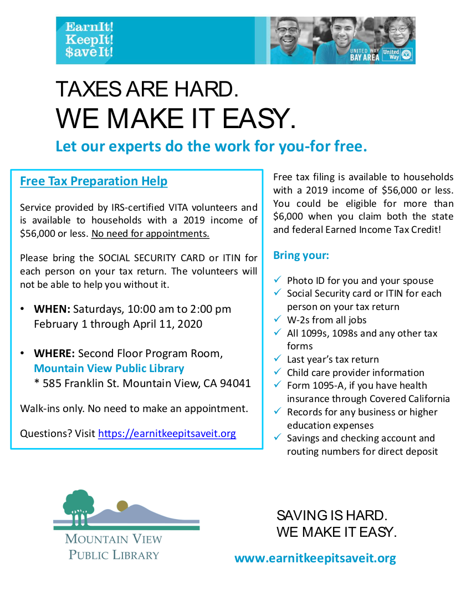
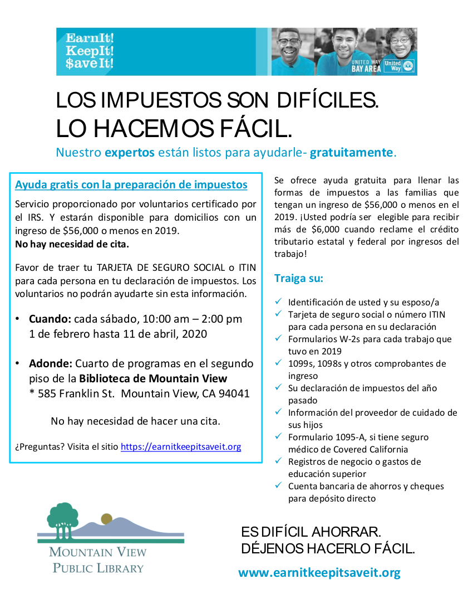

<section>
    <div class="row">
		<div class="columns small-12 hide-for-medium">
			{% include announce_menu.html %}
		</div>
		<div class="left-subnav medium-3 columns hide-for-small-only" data-sticky-container>
			<nav class="columns sticky" data-sticky data-top-anchor="positions" data-btm-anchor="clsepa" data-sticky-on="medium">
				<div id='nav-magellan' data-magellan>
					{% include announce_menu.html %}
				</div>
			</nav>
		</div>
      <div class="large-9 columns">
		<h1>Announcements</h1>

      <h4 id="tax" data-magellan-target="tax">Income Tax Preparation</h4>
	  <div class="large-6 columns"><a href="pdf/vita-e.pdf" target="_blank"></a></div>
	  <div class="large-6 columns"><a href="pdf/vita-s.pdf" target="_blank"></a></div>
      <div class="inner">
          <p><a href="https://earnitkeepitsaveit.org">Earn It! Keep It! Save It!</a> (EKS) is the <a href="https://earnitkeepitsaveit.org">United Way Bay Area</a>'s program to locally administer the <a href="https://www.irs.gov/individuals/free-tax-return-preparation-for-you-by-volunteers">IRS Volunteer Income Tax Assistance</a> program. IRS-certified volunteers will prepare federal and Califoria income tax returns of those who make $56,000 or less (<a href="https://www.irs.gov/pub/irs-pdf/p3676bsp.pdf">with certain limitations</a>).</p>
		  <p>The Mountain View Public Library hosts EKS every Saturday during tax season (Feb 1st to April 11th) from 10am-2pm in the second floor program room (walk-in, no reservations accepted). See the <a href="https://mountainview.libcal.com/calendar/libraryevents/freetaxprep">library calendar</a> for more details. The Mountain View site also offers "DIY Taxes", where taxpayers who wish to fill out their own return can prepare and e-file their federal and state returns for free, with volunteers available to answer questions.</p>
		  <p>EKS runs many sites throughout the Bay Area. For a full list, see <a href="https://mountainview.libcal.com/calendar/libraryevents/freetaxprep">their website</a>.</p>
		  <p>AARP Tax-Aide also provides income tax preparation for low and moderate-income taxpayers by IRS-certified volunteers, focusing on those 50 and older. AARP Tax-Aide operates at the Mountain View Senior Center and the Community Center. Check the <a href="https://secure.aarp.org/applications/VMISLocator/searchTaxAideLocations.action">AARP Tax-Aide site locator</a> for more details. Reservations are required.</p>
		  <p><a href="https://www.tax-aid.org">Tax-Aid</a> also offers tax preparation services for those who make under $55,000 a year. They will offer a one-day event sponsored by Intuit on Thursday, Febrauary 27th from noon to 8pm at the Mountain View library and also operate in <a href="https://tax-aid.org/wp-content/uploads/2020/01/Tax-Aid-locations-2020-1.pdf">other locations</a> in the Bay Area.</p>
	  </div>
	  <hr>

      <h4 id="listos" data-magellan-target="listos">Immigration Workshop - Taller de inmigración</h4>
	  <div class="large-6 columns"><a href="pdf/listoseng.pdf" target="_blank"></a></div>
	  <div class="large-6 columns"><a href="pdf/listosesp.pdf" target="_blank"></a></div>
      <div class="inner">
          <p>This coming Saturday, February 29th, at 11am, immigration lawyer, Esther Kang, will come to the MUR at the Castro-Mistral campus. Ms Kang will spend approximately one hour giving us an update on immigration law, different options for immigration relief, and clarification on the Public Charge ruling. She will spend the second hour answering questions one-on-one. We will also have the opportunity to book appointments with the lawyer to draft Power of Attorney letters for childcare in case of an emergency (hospitalization, deportation, etc), at this appointment, the lawyer will perform an immigration relief assessment as well. The cost of the appointment will be partially subsidized by the organization Listos Mountain View.</p>
		  <p>El próximo sábado 29 de febrero, a las 11am, vendrá la abogada de inmigración, Esther Kang, a la cafetería de las escuelas Castro y Mistral. La abogada hablará aproximadamente una hora sobre actualización a las leyes migratorias, diferentes opciones de desahogo migratorio y aclaraciones sobre la ley de carga pública. La segunda hora la dedicará a responder preguntas de manera mas personal. También habrá oportunidad de hacer citas con la abogada para redactar cartas poder para el cuidado de niños en caso de emergencia (hospitalización/deportación), en esta cita la abogada también realizará un análisis para determinar si existe elegibilidad de desahogo de estatus migratorio. El costo de esta cita será parcialmente subsidiado por la organización Listos Mountain View.</p>
	  </div>
	  <hr>

		<h4 id="election">Important dates for March Primary</h4>
		<p>February 3 <br>Ballots are sent to mailboxes. </p>
		<p>February 18 <br>Vote-by-mail registration closes. Residents can still register and vote in person at any vote center in the County. </p>
		<p>February 22 - March 3 <br>Some VCA vote centers open 8 hours per day, including weekends, for voting and registration in person. </p>
		<p>February 29 - March 3 <br>All VCA vote centers open 8 hours per day, including weekends, for voting and registration in person. </p>
		<p>March 3 <br>Election Day. Mail or turn in mail ballots at a vote center or dropbox. Voter centers open 7am - 8pm. </p>
		<hr>
		
		<h4 id="vote">Mountain View Vote Centers & Ballot Drop Off</h4>
		<p><b>Vote Centers in Mountain View </b><br>Mountain View Community Center - Redwood Hall <br>201 S Rengstorff Avenue, Mountain View, CA 94040 <br>Hours of Operation: <br>3/1/2020 - 3/2/2020 | 9:00am - 5:00pm <br>3/3/2020 [Election day] | 7:00am - 8:00pm </p>
		<p>Church of Scientology Silicon Valley - Chapel <br>1066 Linda Vista Avenue, Mountain View, CA 94043 <br>Hours of Operation: <br>2/22/2020 - 3/2/2020 | 9:00am - 5:00pm <br>3/3/2020 [Election day] | 7:00am - 8:00pm </p>
		<p>Santiago Villa Mobile Park - Club House <br>1075 Space Park Way, Mountain View, CA 94043 <br>Hours of Operation: <br>2/29/2020 - 3/2/2020 | 9:00am - 5:00pm <br>3/3/2020 [Election Day] | 7:00am - 8:00pm </p>
		<p><b>Ballot drop off locations in Mountain View </b><br>Mountain View City Hall – City Clerk's Office <br>500 Castro Street, Mountain View, CA 94039​​ <br>Open during business hours </p>
		<p>Mountain View Public Library  (Outside Drop Box) <br>585 Franklin Street, Mountain View, CA 94041​ <br>Available 24 Hours </p>
		<p>Computer History Museum <br>1401 North Shoreline Blvd, Mountain View, CA 94043 <br>Available 24 Hours </p>
		<p>Mountain View Fire Station 4 <br>229 North Whisman Road, Mountain View, CA 94043 <br>Available 24 Hours </p>
		<hr>

		
		<h4 id="language">Voter Workshops for Language Communities</h4>
		<p>In preparation for the 2020 elections the Santa Clara Registrar of Voters will be hosting a variety of language workshops. </p>
		<p>These language workshops will focus on introducing a handful of advantageous changes for Santa Clara County voters. It will also cover different ways for people to get involved in the election process. Each workshop will have the appropriate bilingual speakers available either for the entire presentation or to provide interpretation services. </p>
		<p>Below are the dates, times, and locations for each language workshop: </p>
		<p><a href="https://spanishworkshopvca.eventbrite.com" target="_blank">Spanish</a> <br>2/3/2020 <br>6:30pm to 8:30pm <br>Gilroy Library <br>350 W 6th St, Gilroy, CA 95020 </p>
		<p><a href="https://tagalogworkshopvca.eventbrite.com" target="_blank">Tagalog</a> <br>2/4/2020 <br>6:30pm to 8:30pm <br>Educational Park Branch Library <br>1772 Educational Park Drive San Jose, CA 95133 </p>
		<p><a href="https://hindiworkshopvca.eventbrite.com" target="_blank">Hindi</a> <br>2/7/2020 <br>6:30pm to 8:30pm <br>West Valley Library <br>1243 San Tomas Aquino Road San Jose, CA 95117 </p>
		<p><a href="https://vietnameseworkshopvca.eventbrite.com" target="_blank">Vietnamese</a> <br>2/10/2020 <br>6:30pm to 8:30pm <br>Tully Community Branch Library <br>880 Tully Road San Jose, CA 95111 </p>
		<p><a href="https://khmerworkshopvca.eventbrite.com" target="_blank">Khmer</a> <br>2/15/2020 <br>6:30pm to 8:30pm <br>West Valley Library <br>1243 San Tomas Aquino Road San Jose, CA 95117 </p>
		<p><a href="https://chineseworkshopvca.eventbrite.com" target="_blank">Chinese</a> <br>2/18/2020 <br>6:30pm to 8:30pm <br>Berryessa Library <br>3355 Noble Avenue San Jose, CA 95132 </p>
		<p><a href="https://japaneseworkshopvca.eventbrite.com" taret="_blank">Japanese</a> <br>2/19/2020 <br>6:30pm to 8:30pm <br>Joyce Ellington Library <br>491 East Empire Street San Jose, CA 95112 </p>
		<p>Please RSVP to the events by selecting the corresponding hyperlink on the language workshop table.</p>
		<hr>
		
		<h4 id="caltrain">Caltrain Electrification</h4>
		<p>In Summer 2018, Caltrain began performing work along the railroad corridor in Mountain View. </p>
		<p>The activities during this time included locating underground utilities, testing soil conditions, inspecting signal/communication equipment, potholing, and pruning/removing trees in preparation for the installation and operation of the Overhead Contact System that will power electric trains. </p>
		<p>Caltrain crews will be extending the existing set-out track approximately 500 feet in order to accommodate on-track equipment required for Caltrain Electrification.  The current set-out track is between Farley Street and South Shoreline Boulevard in Mountain View.  Construction will require a staging area for foundation installation, pole installation, construction material and pole delivery and storage as well as for loading and unloading of train cars. The loading and unloading of construction train cars and equipment will require the use of trucks, loading of construction trains and occasional use of backup alarms. Staging is expected to begin in October 2019 with construction occurring over a 8-12 month period. </p>
		<p>Vehicles will enter the staging area off of Central Expressway at Farley Street.  Egress will occur south of South Shoreline Boulevard back onto the Central Expressway. </p>.
		<h5>CONSTRUCTION AREA MAP</h5>
		<br>
		<hr>

		<h4 id="women">Office of Women’s Policy Civic Engagement Mini-Grants – Round 2 now open!!</h4>
		<p>A second round for applications is open as of December 16, 2019 through February 28, 2020. As part of the commemoration of the upcoming 100th anniversary of the Women’s Suffrage movement, the Santa Clara County Office of Women’s Policy (OWP) will offer $75,000 in mini-grants to Santa Clara County residents who want to organize their communities to promote civic engagement and participatory democracy in honor of the legacy created by the women who fought for the 19th amendment.</p>
		<p>These mini-grants are intended for community members and groups planning activities, events and/or projects promoting democracy as it relates to women’s suffrage and the continuing need for women, girls, and female-identified individuals to actively participate, support, and promote their inclusion in a democratic system. The amount of the mini-grants will range from $200 - $2,000 and will be disbursed to various groups, including individuals, schools, community organizations, and others, to ensure maximum impact as the funding will reach people who are not routinely engaged with County Governments and tend to be missed out when projects meant to foster civic engagement are undertaken. </p>
		<p>Please share the application with all in your networks and community partnerships! Find the link to the application on the <a href="https://www.sccgov.org/sites/owp/engagement/Pages/home.aspx" target="_blank">Office of Women’s Policy site page</a>. The deadline to submit application is February 28, 2020. These applications are also available in Chinese, Hindi, Khmer, Korean, Spanish, Tagalog, and Vietnamese. </p>
		<p>The outcome of the grant will be to allow residents to deliver the best possible ways to their communities to commemorate the centennial, to honor the legacy of the women who fought 99 years ago to crack open the door to equality, and to develop a collective path that will continue to provide equitable ways for women, girls, and gender expansive individuals identifying as women and girls ways to thrive in our County. </p>
		<p>If there any questions, please contact the Office of Women's Policy (408-678-1400 / 2460 N. 1st Street, Suite 220 | San Jose, California  95131).</p>
		<hr>

		<h4 id="cert">El curso de CERT en Español</h4>
		<a href="pdf/2020CERTFlier.pdf" target="_blank"></a>
		<p>El curso de CERT en Español será ofrecido una vez más durante Los primeros tres sábados de marzo del 2020. Nuestro objetivo es que todos los graduados de las tres Academias sean también graduados del programa para preparación de Emergencias CERT. Felicidades a los que ya se graduaron de ambos programas. Si todavía no lo han tomado, el curso de CERT en Español será ofrecido una vez más durante Los primeros tres sábados de marzo del 2020. </p>
		<p>Las inscripciones ya están abiertas y el cupo es limitado. Queremos darle prioridad a los graduados de la Academia  y por eso estamos insistiendo en que se registren lo más pronto posible . Para más información ver el folleto adjunto  o comunicarse con Nora Beltran al (650) 772-8835 o enviar un correo electrónico anora.beltran@mountainview.gov.</p>
		<hr>

		<h4 id="jury">Court Seeks Candidates for Public Watchdog Agency</h4>
		<p><b>Recruitment begins for 2020-2021 Civil Grand Jury panel</b></p>
		<p>SAN JOSÉ, California (January 2, 2020): Presiding Judge Deborah A. Ryan has announced that the Superior Court of California, County of Santa Clara, is seeking volunteers to serve on the 2020-2021 Civil Grand Jury. </p>
		<p>The Civil Grand Jury, an arm of the Superior Court, is a part of the judicial branch of government.  It serves as the county’s civil watchdog agency and may examine all aspects of county and city government, special districts, and school districts.  It is authorized to inspect and audit books, records, and financial expenditures, to ensure accountability of public funds.   The Grand Jury may also inspect jails and juvenile detention facilities. </p>
		<p>Grand Jury service affords citizens the unique opportunity to contribute to the efficiency of local government and to play an integral part in ensuring that government officials are accountable to residents. </p>
		<p>Applicants must be 18 years of age or older, United States citizens, and residents of Santa Clara County. Service on the Grand Jury does require a time commitment of an average of 25 hours per week, or as determined by the Grand Jury. Candidates must be willing to dedicate this year of service to keep careful watch over various aspects of County government, and the one-year term of the 2020-2021 panel will begin on June 18, 2020. </p>
		<p>Persons interested in applying may obtain an application online at <a href="https://www.scscourt.org" target="_blank">www.scscourt.org</a> under “Civil Grand Jury”. Questions about informational events or about the Grand Jury may be directed to <a href="mailto:CGJ@scscourt.org" target="_blank">CGJ@scscourt.org</a> or by contacting Britney Huelbig, Deputy Manager for the Civil Grand Jury, at <a href="tel:4088822721" target="_blank">408-882-2721</a>. </p>
		<p><b>The deadline to submit applications is April 1, 2020. </b></p>
		<hr>

		<h4 id="green">Mountain View Green Building and Reach Codes FAQ</h4>
		<p>The City’s Community Development Department has created a new webpage to provide information regarding the recently adopted Reach Codes. </p>
		<p>Information regarding the City’s Amended Green Building Codes (MVGBC) and Reach Code: 
		<ul>
		<li><a href="https://tinyurl.com/wxrbwnh" target="_blank">https://tinyurl.com/wxrbwnh</a> </li>
		<li><a href="https://tinyurl.com/vgl56cj" target="_blank">https://tinyurl.com/vgl56cj</a> </li>
		</ul>
		</p>
		<hr>

		<h4 id="stateleg">New State Legislation</h4>
		<p>The California state legislature has adopted several bills that went into effect on January 1, 2020. A nice summary of several new laws is <a href="https://laist.com/2019/12/27/californias_new_laws_starting_jan_1_2020.php" target="_blank">available here</a>. </p>
		<p>Many of these laws are quite consequential, but particularly noteworthy are AB 1482 and SB 329. AB 1482 enacts a statewide rent cap (allowing annual rent increases no greater than 5% plus inflation) and prohibits landlords from evicting tenants without just cause. <b>It is important to keep in mind that the state law allow cities to enact stronger renter protections.</b> Renters in the City of Mountain View are protected by the Community Stabilization and Fair Rent Act (CSFRA), also known as Measure V. <a href="https://www.mountainview.gov/depts/comdev/preservation/rentstabilization/default.asp" target="_blank">More information about CSFRA is available here.</a> </p>
		<p>SB 329 prohibits discrimination against tenants with housing vouchers.</p>
		<hr>
		
      </div>
    </div>
</section>
